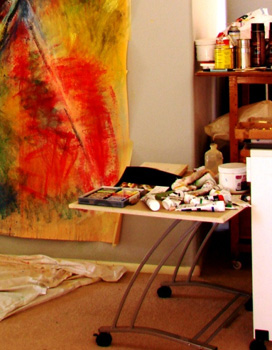

Artist's Statement
Atmosphere in a work of art is important to me, as is the quality and fineness of the work and the individual artist’s point of view made explicit in the piece.
As artists, we know that distinction in our work comes equally from our subject matter and how we treat it. I aim for a line that is both lyrical and energetic, one that is precise in conveying the torsions, attitudes and angles of the human body in motion as well as at rest.
Being largely self-taught as an artist, I am fascinated by the processes of creation in various media. (I’ve worked in photography as well as painting, drawing, collage and mosaic, cut paper, weaving, photography, woodcut and sculpture.) I continue to study woodcuts and prints by several Japanese masters, even though my work from the past four years is often at a larger size ( frequently c. 5 x 8 feet).
My models for the past three years have been the AZDance troupe, and local residents. These include a senior citizen -- I’ve sketched, drawn, painted and carved her image several hundred times so far.
~ Now that I am finally able to work full-time on art, I have discovered this is the liberating, confounding but inspirational experience I always imagined it would be – and I believe my work is ready to be introduced widely.
© 2026 Gary Zaimont | info@garyzaimont.com
| site by factor1